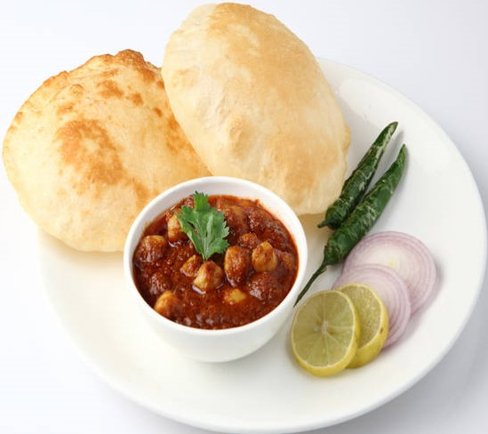

INGREDIENTS
- 1 cup chickpea / chole, soaked overnight
- 4 tbsp oil
- 1 bay leaf
- 1 inch cinnamon stick
- ½ tsp cumin seeds
- 1 onion, finely chopped
- 1 tsp ginger-garlic paste
- 2 tomatoes, finely chopped
- 1 tbsp kashmiri chilli powder
- ½ tsp turmeric powder
- 1 tsp coriander powder
- ½ tsp cumin powder
- ¾ tsp aamchur powder(dry-mango powder)
- salt to taste
- ½ tsp garam masala
- 2 cups water
- 2 tsp coriander leaves, finely chopped

INSTRUCTIONS
- Firstly, in a cooker heat oil.
- Furthermore, saute bay leaf, cinnamon stick and cumin seeds till they turn aromatic.
- Add finely chopped onions and ginger-garlic paste. saute till it turns golden brown.
- Also add tomatoes and saute till they start releasing oil.
- Further, add chilli powder, turmeric, coriander powder.
- Then add,cumin powder, aamchur powder, garam masala and salt.
- Saute for a minute.
- Then add soaked chickpea. make sure to soak chickpea overnight followed by 2 cups of water.
- Further, give a good mix. and check the seasonings.
- Pressure cook for 7-8 whistles on medium flame.
- Allow the pressure to release by itself before opening cooker.
- Mix well and garnish coriander leaves.
- Finally, serve with bhatura.